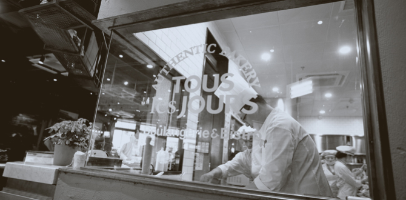

home > 사업소개 > 해외진출
글로벌 뚜레쥬르
글로벌 베이커리 트렌드를 선도하는 브랜드
뚜레쥬르는 글로벌 베이커리 트렌드를 선도하는 브랜드로 거듭나고 있습니다.
전세계에 뚜레쥬르의 브랜드 인지도와 신뢰도를 쌓아가고 있습니다.

- 2004년,
- 미국을 시작으로
- 세계시장 진출
- 뚜레쥬르는 2004년 미국 시장에서 큰 성공을 거두며 해외 진출을 시작해 2005년에는 중국 베이징에 1호점을 오픈하였습니다. 이어 2007년 6월에는 호찌민에 베트남 1호점을 열었으며, 베트남 시장에서의 성공에 힘입어 2011년 필리핀과 인도네시아에도 진출하였습니다. 미국, 중국, 베트남, 인도네시아. 필리핀, 캄보디아, 몽골 등 2018년 현재 총 7개국, 약 400여 개의 매장을 직, 가맹 형태로 운영하고 있습니다.
- 프리미엄 브랜드로
- 인도네시아 베이커리시장 선도
- 인도네시아는 2011년 수도 자카르타에 1호점 오픈 이후, 순차적으로 수라바야, 발리 등에 50여 개 매장을 오픈하여 운영 중입니다. 시장을 선도하는 프리미엄 베이커리로 빠르게 자리매김했으며, 17년에는 해외 브랜드 입점이 제한적이던 인도네시아 주요 3대 공항에도 입점하여 브랜드의 위상을 높이고 있습니다. 중국, 베트남 뚜레쥬르에 이어, 인도네시아에도 첫 번째 신 콘셉트 매장을 2018년 선보였으며, O2O 서비스 수요가 큰 시장 특성을 반영하여 O2O 특화 제품을 운영하는 등 차별화된 고객 경험을 제공하고 있습니다.
- 베트남 시장의
- No.1 베이커리 등극
- 동남아시아 베이커리 시장 매출 1위를 목표로 2007년 베트남 시장에 처음으로 진출하였으며, 베트남 시장 진출 성공이 동남아시아 시장의 본격적인 진출에 큰 역할을 해냈습니다. 베트남에서 뚜레쥬르의 인기는 가히 ‘베이커리 한류’라고 일컬어질만큼 뜨겁습니다. 지난 2007년 베트남 1호점 오픈 이후 현재 호찌민과 하노이를 중심으로 총 40여 개의 직영 매장을 운영하고 있으며, 신 콘셉트의 도입과 확산을 통해 베트남 시장의 No.1 베이커리 자리를 공고히 하고 있습니다.
- 글로벌 No.1을 향한 교두보,
- 중국시장 진출
- 중국에서는 베이징 오도구에 중국 첫 매장이자 아시아 지역 첫 해외 매장을 열고, ‘뚜레쥬르’와 의미와 발음이 비슷한 ‘뚜오러즈르(多乐之日)’라는 중국식 브랜드명으로 진출했습니다.
- 뚜레쥬르는 중국 전국공상 베이커리 공회 선정 ‘클라우드 쉬폰’제품 ‘금상’수상, 중국 경공 기업 발전 협회 선정 ‘품질, 서비스, 신용 AAA브랜드’, ‘중국 우수 품질 제품상’, ‘2017 선진기업 관리상’, 2017년 앵커, 대중점평, 메이퇀 선정 ‘중국 우수 케이크상’ 등 중국 내에서 브랜드 인지도와 신뢰도를 쌓아가고 있습니다.